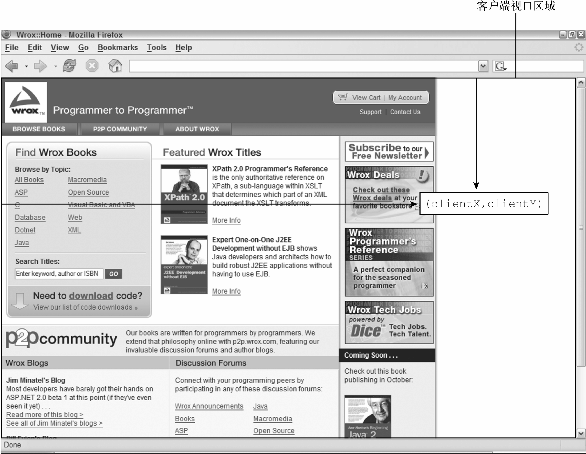
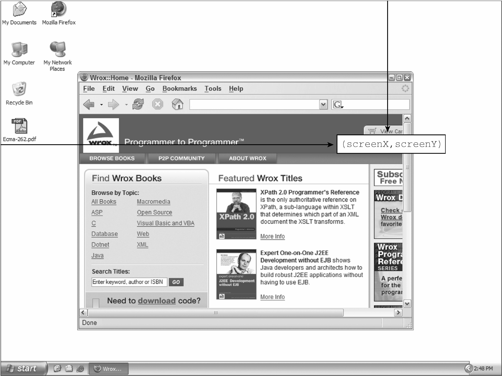
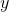
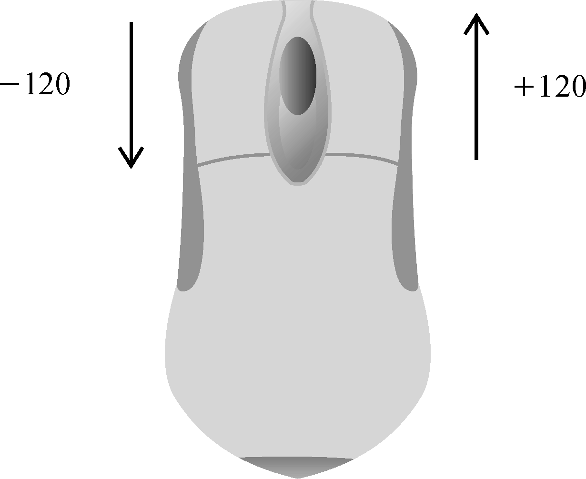
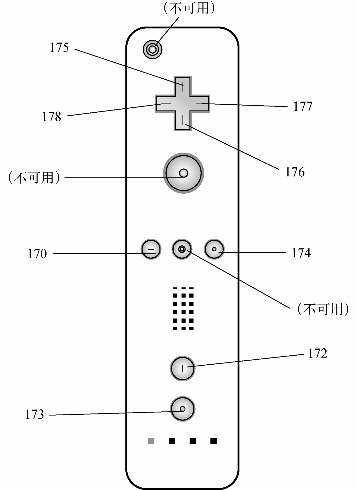
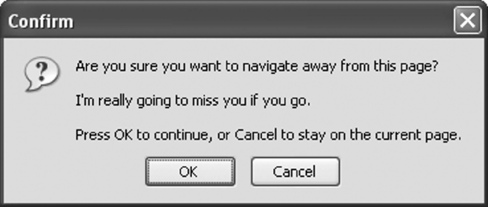
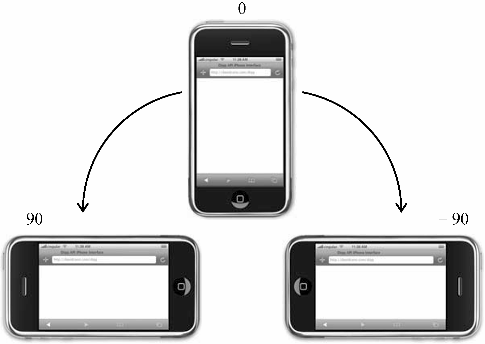
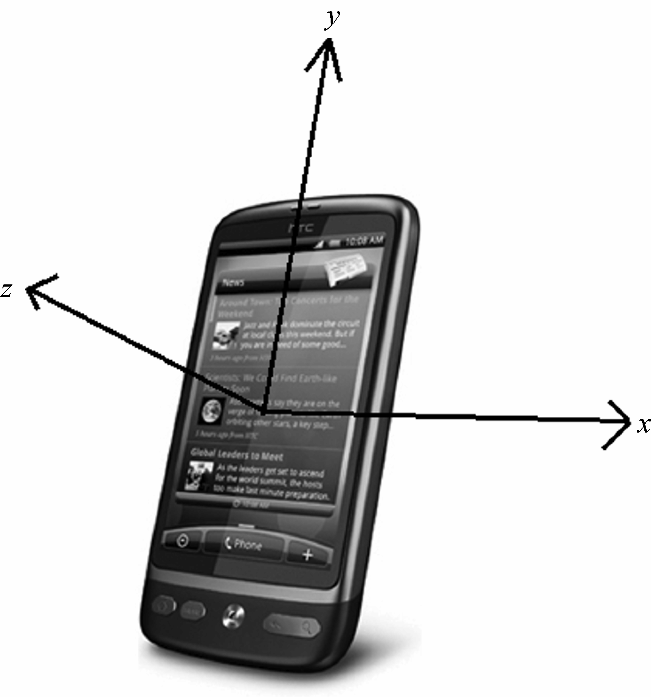
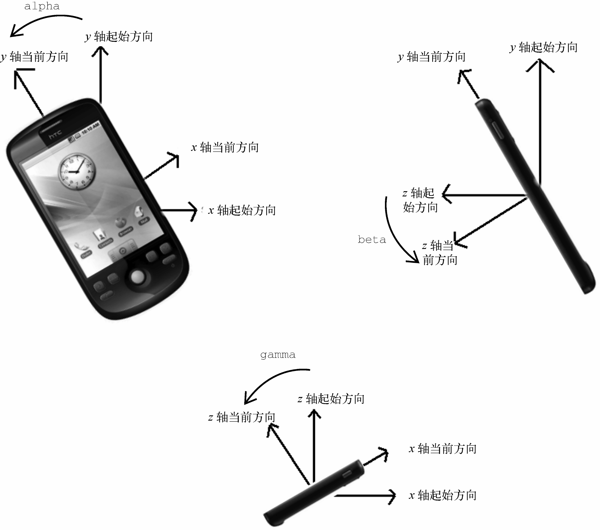

17.4 事件类型
Web浏览器中可以发生很多种事件。如前所述，所发生事件的类型决定了事件对象中会保存什么信息。DOM3 Events定义了如下事件类型。
-
用户界面事件（
UIEvent）：涉及与BOM交互的通用浏览器事件。 -
焦点事件（
FocusEvent）：在元素获得和失去焦点时触发。 -
鼠标事件（
MouseEvent）：使用鼠标在页面上执行某些操作时触发。 -
滚轮事件（
WheelEvent）：使用鼠标滚轮（或类似设备）时触发。 -
输入事件（
InputEvent）：向文档中输入文本时触发。 -
键盘事件（
KeyboardEvent）：使用键盘在页面上执行某些操作时触发。 -
合成事件（
CompositionEvent）：在使用某种IME（Input Method Editor，输入法编辑器）输入字符时触发。
除了这些事件类型之外，HTML5还定义了另一组事件，而浏览器通常在DOM和BOM上实现专有事件。这些专有事件基本上都是根据开发者需求而不是按照规范增加的，因此不同浏览器的实现可能不同。
DOM3 Events在DOM2 Events基础上重新定义了事件，并增加了新的事件类型。所有主流浏览器都支持DOM2 Events和DOM3 Events。
17.4.1 用户界面事件
用户界面事件或UI事件不一定跟用户操作有关。这类事件在DOM规范出现之前就已经以某种形式存在了，保留它们是为了向后兼容。UI事件主要有以下几种。
-
DOMActivate：元素被用户通过鼠标或键盘操作激活时触发（比click或keydown更通用）。这个事件在DOM3 Events中已经废弃。因为浏览器实现之间存在差异，所以不要使用它。 -
load：在window上当页面加载完成后触发，在窗套（<frameset>）上当所有窗格（<frame>）都加载完成后触发，在<img>元素上当图片加载完成后触发，在<object>元素上当相应对象加载完成后触发。 -
unload：在window上当页面完全卸载后触发，在窗套上当所有窗格都卸载完成后触发，在<object>元素上当相应对象卸载完成后触发。 -
abort：在<object>元素上当相应对象加载完成前被用户提前终止下载时触发。 -
error：在window上当JavaScript报错时触发，在<img>元素上当无法加载指定图片时触发，在<object>元素上当无法加载相应对象时触发，在窗套上当一个或多个窗格无法完成加载时触发。 -
select：在文本框（<input>或textarea）上当用户选择了一个或多个字符时触发。 -
resize：在window或窗格上当窗口或窗格被缩放时触发。 -
scroll：当用户滚动包含滚动条的元素时在元素上触发。<body>元素包含已加载页面的滚动条。
大多数HTML事件与window对象和表单控件有关。
除了DOMActivate，这些事件在DOM2 Events中都被归为HTML Events（DOMActivate在DOM2中仍旧是UI事件）。
-
load事件load事件可能是JavaScript中最常用的事件。在window对象上，load事件会在整个页面（包括所有外部资源如图片、JavaScript文件和CSS文件）加载完成后触发。可以通过两种方式指定load事件处理程序。第一种是JavaScript方式，如下所示：window.addeventlistener("load", (event) => { console.log("loaded!"); });这是使用
addEventListener()方法来指定事件处理程序。与其他事件一样，事件处理程序会接收到一个event对象。这个event对象并没有提供关于这种类型事件的额外信息，虽然在DOM合规的浏览器中，event.target会被设置为document，但在IE8之前的版本中，不会设置这个对象的srcElement属性。第二种指定
load事件处理程序的方式是向<body>元素添加onload属性，如下所示：<!doctype html> <html> <head> <title>load event example</title> </head> <body onload="console.log('loaded!')"> </body> </html>一般来说，任何在
window上发生的事件，都可以通过给<body>元素上对应的属性赋值来指定，这是因为HTML中没有window元素。这实际上是为了保证向后兼容的一个策略，但在所有浏览器中都能得到很好的支持。实际开发中要尽量使用JavaScript方式。注意 根据DOM2 Events，
load事件应该在document而非window上触发。可是为了向后兼容，所有浏览器都在window上实现了load事件。图片上也会触发
load事件，包括DOM中的图片和非DOM中的图片。可以在HTML中直接给<img>元素的onload属性指定事件处理程序，比如：<img src="smile.gif" onload="console.log('image loaded.')">这个例子会在图片加载完成后输出一条消息。同样，使用JavaScript也可以为图片指定事件处理程序：
let image = document.getelementbyid("myimage"); image.addeventlistener("load", (event) => { console.log(event.target.src); });这里使用JavaScript为图片指定了
load事件处理程序。处理程序会接收到event对象，虽然这个对象上没有多少有用的信息。这个事件的目标是<img>元素，因此可以直接从event.target.src属性中取得图片地址并打印出来。在通过JavaScript创建新
<img>元素时，也可以给这个元素指定一个在加载完成后执行的事件处理程序。在这里，关键是要在赋值src属性前指定事件处理程序，如下所示：window.addeventlistener("load", () => { let image = document.createelement("img"); image.addeventlistener("load", (event) => { console.log(event.target.src); }); document.body.appendchild(image); image.src = "smile.gif"; });这个例子首先为
window指定了一个load事件处理程序。因为示例涉及向DOM中添加新元素，所以必须确保页面已经加载完成。如果在页面加载完成之前操作document.body，则会导致错误。然后，代码创建了一个新的<img>元素，并为这个元素设置了load事件处理程序。最后，才把这个元素添加到文档中并指定了其src属性。注意，下载图片并不一定要把<img>元素添加到文档，只要给它设置了src属性就会立即开始下载。同样的技术也适用于DOM0的
Image对象。在DOM出现之前，客户端都使用Image对象预先加载图片。可以像使用前面（通过createElement()方法创建）的<img>元素一样使用Image对象，只是不能把后者添加到DOM树。下面的例子使用新Image对象实现了图片预加载：window.addeventlistener("load", () => { let image = new image(); image.addeventlistener("load", (event) => { console.log("image loaded!"); }); image.src = "smile.gif"; });这里调用
Image构造函数创建了一个新图片，并给它设置了事件处理程序。有些浏览器会把Image对象实现为<img>元素，但并非所有浏览器都如此。所以最好把它们看成是两个东西。注意 在IE8及早期版本中，如果图片没有添加到DOM文档中，则
load事件发生时不会生成event对象。对未被添加到文档中的<img>元素以及Image对象来说都是这样。IE9修复了这个问题。还有一些元素也以非标准的方式支持
load事件。<script>元素会在JavaScript文件加载完成后触发load事件，从而可以动态检测。与图片不同，要下载JavaScript文件必须同时指定src属性并把<script>元素添加到文档中。因此指定事件处理程序和指定src属性的顺序在这里并不重要。下面的代码展示了如何给动态创建的<script>元素指定事件处理程序：window.addeventlistener("load", () => { let script = document.createelement("script"); script.addeventlistener("load", (event) => { console.log("loaded"); }); script.src = "example.js"; document.body.appendchild(script); });这里
event对象的target属性在大多数浏览器中是<script>节点。IE8及更早版本不支持<script>元素触发load事件。IE和Opera支持
<link>元素触发load事件，因而支持动态检测样式表是否加载完成。下面的代码展示了如何设置这样的事件处理程序：window.addeventlistener("load", () => { let link = document.createelement("link"); link.type = "text/css"; link.rel= "stylesheet"; link.addeventlistener("load", (event) => { console.log("css loaded"); }); link.href = "example.css"; document.getelementsbytagname("head")[0].appendchild(link); });与
<script>节点一样，在指定href属性并把<link>节点添加到文档之前不会下载样式表。
-
unload事件与
load事件相对的是unload事件，unload事件会在文档卸载完成后触发。unload事件一般是在从一个页面导航到另一个页面时触发，最常用于清理引用，以避免内存泄漏。与load事件类似，unload事件处理程序也有两种指定方式。第一种是JavaScript方式，如下所示：window.addeventlistener("unload", (event) => { console.log("unloaded!"); });这个事件生成的
event对象在DOM合规的浏览器中只有target属性（值为document）。IE8及更早版本在这个事件上不提供srcElement属性。第二种方式与
load事件类似，就是给<body>元素添加onunload属性：<!doctype html> <html> <head> <title>unload event example</title> </head> <body onunload="console.log('unloaded!')"> </body> </html>无论使用何种方式，都要注意事件处理程序中的代码。因为
unload事件是在页面卸载完成后触发的，所以不能使用页面加载后才有的对象。此时要访问DOM或修改页面外观都会导致错误。注意 根据DOM2 Events，
unload事件应该在<body>而非window上触发。可是为了向后兼容，所有浏览器都在window上实现了unload事件。 -
resize事件当浏览器窗口被缩放到新高度或宽度时，会触发
resize事件。这个事件在window上触发，因此可以通过JavaScript在window上或者为<body>元素添加onresize属性来指定事件处理程序。优先使用JavaScript方式：window.addeventlistener("resize", (event) => { console.log("resized"); });类似于其他在
window上发生的事件，此时会生成event对象，且这个对象的target属性在DOM合规的浏览器中是document。而IE8及更早版本中并没有提供可用的属性。不同浏览器在决定何时触发
resize事件上存在重要差异。IE、Safari、Chrome和Opera会在窗口缩放超过1像素时触发resize事件，然后随着用户缩放浏览器窗口不断触发。Firefox早期版本则只在用户停止缩放浏览器窗口时触发resize事件。无论如何，都应该避免在这个事件处理程序中执行过多计算。否则可能由于执行过于频繁而导致浏览器响应明确变慢。注意 浏览器窗口在最大化和最小化时也会触发
resize事件。 -
scroll事件虽然
scroll事件发生在window上，但实际上反映的是页面中相应元素的变化。在混杂模式下，可以通过<body>元素检测scrollLeft和scrollTop属性的变化。而在标准模式下，这些变化在除早期版的Safari之外的所有浏览器中都发生在<html>元素上（早期版的Safari在<body>上跟踪滚动位置）。下面的代码演示了如何处理这些差异：window.addeventlistener("scroll", (event) => { if (document.compatmode == "css1compat") { console.log(document.documentelement.scrolltop); } else { console.log(document.body.scrolltop); } });以上事件处理程序会在页面滚动时输出垂直方向上滚动的距离，而且适用于不同渲染模式。因为Safari 3.1之前不支持
document.compatMode，所以早期版本会走第二个分支。类似于
resize，scroll事件也会随着文档滚动而重复触发，因此最好保持事件处理程序的代码尽可能简单。
17.4.2 焦点事件
焦点事件在页面元素获得或失去焦点时触发。这些事件可以与document.hasFocus()和document.activeElement一起为开发者提供用户在页面中导航的信息。焦点事件有以下6种。
-
blur：当元素失去焦点时触发。这个事件不冒泡，所有浏览器都支持。 -
DOMFocusIn：当元素获得焦点时触发。这个事件是focus的冒泡版。Opera是唯一支持这个事件的主流浏览器。DOM3 Events废弃了DOMFocusIn，推荐focusin。 -
DOMFocusOut：当元素失去焦点时触发。这个事件是blur的通用版。Opera是唯一支持这个事件的主流浏览器。DOM3 Events废弃了DOMFocusOut，推荐focusout。 -
focus：当元素获得焦点时触发。这个事件不冒泡，所有浏览器都支持。 -
focusin：当元素获得焦点时触发。这个事件是focus的冒泡版。 -
focusout：当元素失去焦点时触发。这个事件是blur的通用版。
焦点事件中的两个主要事件是focus和blur，这两个事件在JavaScript早期就得到了浏览器支持。它们最大的问题是不冒泡。这导致IE后来又增加了focusin和focusout，Opera又增加了DOMFocusIn和DOMFocusOut。IE新增的这两个事件已经被DOM3 Events标准化。
当焦点从页面中的一个元素移到另一个元素上时，会依次发生如下事件。
(1)
focuscout在失去焦点的元素上触发。
(2)
focusin在获得焦点的元素上触发。
(3)
blur在失去焦点的元素上触发。
(4)
DOMFocusOut在失去焦点的元素上触发。
(5)
focus在获得焦点的元素上触发。
(6)
DOMFocusIn在获得焦点的元素上触发。
其中，blur、DOMFocusOut和focusout的事件目标是失去焦点的元素，而focus、DOMFocusIn和focusin的事件目标是获得焦点的元素。
17.4.3 鼠标和滚轮事件
鼠标事件是Web开发中最常用的一组事件，这是因为鼠标是用户的主要定位设备。DOM3 Events定义了9种鼠标事件。
-
click：在用户单击鼠标主键（通常是左键）或按键盘回车键时触发。这主要是基于无障碍的考虑，让键盘和鼠标都可以触发onclick事件处理程序。 -
dblclick：在用户双击鼠标主键（通常是左键）时触发。这个事件不是在DOM2 Events中定义的，但得到了很好的支持，DOM3 Events将其进行了标准化。 -
mousedown：在用户按下任意鼠标键时触发。这个事件不能通过键盘触发。 -
mouseenter：在用户把鼠标光标从元素外部移到元素内部时触发。这个事件不冒泡，也不会在光标经过后代元素时触发。mouseenter事件不是在DOM2 Events中定义的，而是DOM3 Events中新增的事件。 -
mouseleave：在用户把鼠标光标从元素内部移到元素外部时触发。这个事件不冒泡，也不会在光标经过后代元素时触发。mouseleave事件不是在DOM2 Events中定义的，而是DOM3 Events中新增的事件。 -
mousemove：在鼠标光标在元素上移动时反复触发。这个事件不能通过键盘触发。 -
mouseout：在用户把鼠标光标从一个元素移到另一个元素上时触发。移到的元素可以是原始元素的外部元素，也可以是原始元素的子元素。这个事件不能通过键盘触发。 -
mouseover：在用户把鼠标光标从元素外部移到元素内部时触发。这个事件不能通过键盘触发。 -
mouseup：在用户释放鼠标键时触发。这个事件不能通过键盘触发。
页面中的所有元素都支持鼠标事件。除了mouseenter和mouseleave，所有鼠标事件都会冒泡，都可以被取消，而这会影响浏览器的默认行为。
由于事件之间存在关系，因此取消鼠标事件的默认行为也会影响其他事件。
比如，click事件触发的前提是mousedown事件触发后，紧接着又在同一个元素上触发了mouseup事件。如果mousedown和mouseup中的任意一个事件被取消，那么click事件就不会触发。类似地，两次连续的click事件会导致dblclick事件触发。只要有任何逻辑阻止了这两个click事件发生（比如取消其中一个click事件或者取消mousedown或mouseup事件中的任一个），dblclick事件就不会发生。这4个事件永远会按照如下顺序触发：
(1)
mousedown
(2)
mouseup
(3)
click
(4)
mousedown
(5)
mouseup
(6)
click
(7)
dblclick
click和dblclick在触发前都依赖其他事件触发，mousedown和mouseup则不会受其他事件影响。
IE8及更早版本的实现中有个问题，这会导致双击事件跳过第二次mousedown和click事件。相应的顺序变成了：
(1)
mousedown
(2)
mouseup
(3)
click
(4)
mouseup
(5)
dblclick
鼠标事件在DOM3 Events中对应的类型是"MouseEvent"，而不是"MouseEvents"。
鼠标事件还有一个名为滚轮事件的子类别。滚轮事件只有一个事件mousewheel，反映的是鼠标滚轮或带滚轮的类似设备上滚轮的交互。
-
客户端坐标
鼠标事件都是在浏览器视口中的某个位置上发生的。这些信息被保存在
event对象的clientX和clientY属性中。这两个属性表示事件发生时鼠标光标在视口中的坐标，所有浏览器都支持。图17-4展示了视口中的客户端坐标。
图 17-4
可以通过下面的方式获取鼠标事件的客户端坐标：
let div = document.getelementbyid("mydiv"); div.addeventlistener("click", (event) => { console.log(`client coordinates: ${event.clientx}, ${event.clienty}`); });这个例子为
<div>元素指定了一个onclick事件处理程序。当元素被点击时，会显示事件发生时鼠标光标在客户端视口中的坐标。注意客户端坐标不考虑页面滚动，因此这两个值并不代表鼠标在页面上的位置。
-
页面坐标
客户端坐标是事件发生时鼠标光标在客户端视口中的坐标，而页面坐标是事件发生时鼠标光标在页面上的坐标，通过
event对象的pageX和pageY可以获取。这两个属性表示鼠标光标在页面上的位置，因此反映的是光标到页面而非视口左边与上边的距离。可以像下面这样取得鼠标事件的页面坐标：
let div = document.getelementbyid("mydiv"); div.addeventlistener("click", (event) => { console.log(`page coordinates: ${event.pagex}, ${event.pagey}`); });在页面没有滚动时，
pageX和pageY与clientX和clientY的值相同。IE8及更早版本没有在
event对象上暴露页面坐标。不过，可以通过客户端坐标和滚动信息计算出来。滚动信息可以从document.body（混杂模式）或document.documentElement（标准模式）的scrollLeft和scrollTop属性获取。计算过程如下所示：let div = document.getelementbyid("mydiv"); div.addeventlistener("click", (event) => { let pagex = event.pagex, pagey = event.pagey; if (pagex === undefined) { pagex = event.clientx + (document.body.scrollleft || document.documentelement.scrollleft); } if (pagey === undefined) { pagey = event.clienty + (document.body.scrolltop || document.documentelement.scrolltop); } console.log(`page coordinates: ${pagex}, ${pagey}`); }); -
屏幕坐标
鼠标事件不仅是在浏览器窗口中发生的，也是在整个屏幕上发生的。可以通过
event对象的screenX和screenY属性获取鼠标光标在屏幕上的坐标。图17-5展示了浏览器中触发鼠标事件的光标的屏幕坐标。
图 17-5
可以像下面这样获取鼠标事件的屏幕坐标：
let div = document.getelementbyid("mydiv"); div.addeventlistener("click", (event) => { console.log(`screen coordinates: ${event.screenx}, ${event.screeny}`); });与前面的例子类似，这段代码也为
<div>元素指定了onclick事件处理程序。当元素被点击时，会通过控制台打印出事件的屏幕坐标。
-
修饰键
虽然鼠标事件主要是通过鼠标触发的，但有时候要确定用户想实现的操作，还要考虑键盘按键的状态。键盘上的修饰键Shift、Ctrl、Alt和Meta经常用于修改鼠标事件的行为。DOM规定了4个属性来表示这几个修饰键的状态：
shiftKey、ctrlKey、altKey和metaKey。这几属性会在各自对应的修饰键被按下时包含布尔值true，没有被按下时包含false。在鼠标事件发生的，可以通过这几个属性来检测修饰键是否被按下。来看下面的例子，其中在click事件发生时检测了每个修饰键的状态：let div = document.getelementbyid("mydiv"); div.addeventlistener("click", (event) => { let keys = new array(); if (event.shiftkey) { keys.push("shift"); } if (event.ctrlkey) { keys.push("ctrl"); } if (event.altkey) { keys.push("alt"); } if (event.metakey) { keys.push("meta"); } console.log("keys: " + keys.join(",")); });在这个例子中，
onclick事件处理程序检查了不同修饰键的状态。keys数组中包含了在事件发生时被按下的修饰键的名称。每个对应属性为true的修饰键的名称都会添加到keys中。最后，事件处理程序会输出所有键的名称。注意 现代浏览器支持所有这4个修饰键。IE8及更早版本不支持
metaKey属性。 -
相关元素
对
mouseover和mouseout事件而言，还存在与事件相关的其他元素。这两个事件都涉及从一个元素的边界之内把光标移到另一个元素的边界之内。对mouseover事件来说，事件的主要目标是获得光标的元素，相关元素是失去光标的元素。类似地，对mouseout事件来说，事件的主要目标是失去光标的元素，而相关元素是获得光标的元素。来看下面的例子：<!doctype html> <html> <head> <title>related elements example</title> </head> <body> <div id="mydiv" style="background-color:red;height:100px;width:100px;"></div> </body> </html>这个页面中只包含一个
<div>元素。如果光标开始在<div>元素上，然后从它上面移出，则<div>元素上会触发mouseout事件，相关元素为<body>元素。与此同时，<body>元素上会触发mouseover事件，相关元素是<div>元素。DOM通过
event对象的relatedTarget属性提供了相关元素的信息。这个属性只有在mouseover和mouseout事件发生时才包含值，其他所有事件的这个属性的值都是null。IE8及更早版本不支持relatedTarget属性，但提供了其他的可以访问到相关元素的属性。在mouseover事件触发时，IE会提供fromElement属性，其中包含相关元素。而在mouseout事件触发时，IE会提供toElement属性，其中包含相关元素。（IE9支持所有这些属性。）因此，可以在EventUtil中增加一个通用的获取相关属性的方法：var eventutil = { // 其他代码 getrelatedtarget: function(event) { if (event.relatedtarget) { return event.relatedtarget; } else if (event.toelement) { return event.toelement; } else if (event.fromelement) { return event.fromelement; } else { return null; } }, // 其他代码 };与前面介绍的其他跨浏览器方法一样，这个方法同样使用特性检测来确定要返回哪个值。可以像下面这样使用
EventUtil.getRelatedTarget()方法：let div = document.getelementbyid("mydiv"); div.addeventlistener("mouseout", (event) => { let target = event.target; let relatedtarget = eventutil.getrelatedtarget(event); console.log( `moused out of ${target.tagname} to ${relatedtarget.tagname}`); });这个例子在
<div>元素上注册了mouseout事件处理程序。当事件触发时，就会打印出一条消息说明鼠标从哪个元素移出，移到了哪个元素上。
-
鼠标按键
只有在元素上单击鼠标主键（或按下键盘上的回车键）时
click事件才会触发，因此按键信息并不是必需的。对mousedown和mouseup事件来说，event对象上会有一个button属性，表示按下或释放的是哪个按键。DOM为这个button属性定义了3个值：0表示鼠标主键、1表示鼠标中键（通常也是滚轮键）、2表示鼠标副键。按照惯例，鼠标主键通常是左边的按键，副键通常是右边的按键。IE8及更早版本也提供了
button属性，但这个属性的值与前面说的完全不同：- 0，表示没有按下任何键；
- 1，表示按下鼠标主键；
- 2，表示按下鼠标副键；
- 3，表示同时按下鼠标主键、副键；
- 4，表示按下鼠标中键；
- 5，表示同时按下鼠标主键和中键；
- 6，表示同时按下鼠标副键和中键；
- 7，表示同时按下3个键。
很显然，DOM定义的
button属性比IE这一套更简单也更有用，毕竟同时按多个鼠标键的情况很少见。为此，实践中基本上都以DOM的button属性为准，这是因为除IE8及更早版本外的所有主流浏览器都原生支持。主、中、副键的定义非常明确，而IE定义的其他情形都可以翻译为按下其中某个键，而且优先翻译为主键。比如，IE返回5或7时，就会对应到DOM的0。
-
额外事件信息
DOM2 Events规范在
event对象上提供了detail属性，以给出关于事件的更多信息。对鼠标事件来说，detail包含一个数值，表示在给定位置上发生了多少次单击。单击相当于在同一个像素上发生一次mousedown紧跟一次mouseup。detail的值从1开始，每次单击会加1。如果鼠标在mousedown和mouseup之间移动了，则detail会重置为0。IE还为每个鼠标事件提供了以下额外信息：
-
altLeft，布尔值，表示是否按下了左Alt键（如果altLeft是true，那么altKey也是true）； -
ctrlLeft，布尔值，表示是否按下了左Ctrl键（如果ctrlLeft是true，那么ctrlKey也是true）； -
offsetX，光标相对于目标元素边界的 坐标；
坐标； -
offsetY，光标相对于目标元素边界的坐标； -
shiftLeft，布尔值，表示是否按下了左Shift键（如果shiftLeft是true，那么shiftKey也是true）。
这些属性的作用有限，这是因为只有IE支持。而且，它们提供的信息要么没必要，要么可以通过其他方式计算。
-
-
mousewheel事件IE6首先实现了
mousewheel事件。之后，Opera、Chrome和Safari也跟着实现了。mousewheel事件会在用户使用鼠标滚轮时触发，包括在垂直方向上任意滚动。这个事件会在任何元素上触发，并（在IE8中）冒泡到document和（在所有现代浏览器中）window。mousewheel事件的event对象包含鼠标事件的所有标准信息，此外还有一个名为wheelDelta的新属性。当鼠标滚轮向前滚动时，wheelDelta每次都是+120；而当鼠标滚轮向后滚动时，wheelDelta每次都是–120（见图17-6）。
图 17-6
可以为页面上的任何元素或文档添加
onmousewheel事件处理程序，以处理所有鼠标滚轮交互，比如：document.addeventlistener("mousewheel", (event) => { console.log(event.wheeldelta); });这个例子简单地显示了鼠标滚轮事件触发时
wheelDelta的值。多数情况下只需知道滚轮滚动的方向，而这通过wheelDelta值的符号就可以知道。注意 HTML5也增加了
mousewheel事件，以反映大多数浏览器对它的支持。 -
触摸屏设备
iOS和Android等触摸屏设备的实现大相径庭，因为触摸屏通常不支持鼠标操作。在为触摸屏设备开发时，要记住以下事项。
- 不支持
dblclick事件。双击浏览器窗口可以放大，但没有办法覆盖这个行为。 - 单指点触屏幕上的可点击元素会触发
mousemove事件。如果操作会导致内容变化，则不会再触发其他事件。如果屏幕上没有变化，则会相继触发mousedown、mouseup和click事件。点触不可点击的元素不会触发事件。可点击元素是指点击时有默认动作的元素（如链接）或指定了onclick事件处理程序的元素。 -
mousemove事件也会触发mouseover和mouseout事件。 - 双指点触屏幕并滑动导致页面滚动时会触发
mousewheel和scroll事件。
- 不支持
-
无障碍问题
如果Web应用或网站必须考虑残障人士，特别是使用屏幕阅读器的用户，那么必须小心使用鼠标事件。如前所述，按回车键可以触发
click事件，但其他鼠标事件不能通过键盘触发。因此，建议不要使用click事件之外的其他鼠标事件向用户提示功能或触发代码执行，这是因为其他鼠标事件会严格妨碍盲人或视障用户使用。以下是几条使用鼠标事件时应该遵循的无障碍建议。- 使用
click事件执行代码。有人认为，当使用onmousedown执行代码时，应用程序会运行得更快。对视力正常用户来说确实如此。但在屏幕阅读器上，这样会导致代码无法执行，这是因为屏幕阅读器无法触发mousedown事件。 - 不要使用
mouseover向用户显示新选项。同样，原因是屏幕阅读器无法触发mousedown事件。如果必须要通过这种方式显示新选项，那么可以考虑显示相同信息的键盘快捷键。 - 不要使用
dblclick执行重要的操作，这是因为键盘不能触发这个事件。
遵循这些简单的建议可以极大提升Web应用或网站对残障人士的无障碍性。
注意 要了解更多关于网站无障碍的信息，可以参考WebAIM网站。
- 使用
17.4.4 键盘与输入事件
键盘事件是用户操作键盘时触发的。DOM2 Events最初定义了键盘事件，但该规范在最终发布前删除了相应内容。因此，键盘事件很大程度上是基于原始的DOM0实现的。
DOM3 Events为键盘事件提供了一个首先在IE9中完全实现的规范。其他浏览器也开始实现该规范，但仍然存在很多遗留的实现。
键盘事件包含3个事件：
-
keydown，用户按下键盘上某个键时触发，而且持续按住会重复触发。 -
keypress，用户按下键盘上某个键并产生字符时触发，而且持续按住会重复触发。Esc键也会触发这个事件。DOM3 Events废弃了keypress事件，而推荐textInput事件。 -
keyup，用户释放键盘上某个键时触发。
虽然所有元素都支持这些事件，但当用户在文本框中输入内容时最容易看到。
输入事件只有一个，即textInput。这个事件是对keypress事件的扩展，用于在文本显示给用户之前更方便地截获文本输入。textInput会在文本被插入到文本框之前触发。
当用户按下键盘上的某个字符键时，首先会触发keydown事件，然后触发keypress事件，最后触发keyup事件。注意，这里keydown和keypress事件会在文本框出现变化之前触发，而keyup事件会在文本框出现变化之后触发。如果一个字符键被按住不放，keydown和keypress就会重复触发，直到这个键被释放。
对于非字符键，在键盘上按一下这个键，会先触发keydown事件，然后触发keyup事件。如果按住某个非字符键不放，则会重复触发keydown事件，直到这个键被释放，此时会触发keyup事件。
注意 键盘事件支持与鼠标事件相同的修饰键。
shiftKey、ctrlKey、altKey和metaKey属性在键盘事件中都是可用的。IE8及更早版本不支持metaKey属性。
-
键码
对于
keydown和keyup事件，event对象的keyCode属性中会保存一个键码，对应键盘上特定的一个键。对于字母和数字键，keyCode的值与小写字母和数字的ASCII编码一致。比如数字7键的keyCode为55，而字母A键的keyCode为65，而且跟是否按了Shift键无关。DOM和IE的event对象都支持keyCode属性。下面这个例子展示了如何使用keyCode属性：let textbox = document.getelementbyid("mytext"); textbox.addeventlistener("keyup", (event) => { console.log(event.keycode); });这个例子在
keyup事件触发时直接显示出event对象的keyCode属性值。下表给出了键盘上所有非字符键的键码。键 键码 键 键码 Backspace 8 数字键盘8 104 Tab 9 数字键盘9 105 Enter 13 数字键盘+ 107 Shift 16 减号（包含数字和非数字键盘） 109 Ctrl 17 数字键盘. 110 Alt 18 数字键盘/ 111 Pause/Break 19 F1 112 Caps Lock 20 F2 113 Esc 27 F3 114 Page Up 33 F4 115 Page Down 34 F5 116 End 35 F6 117 Home 36 F7 118 左箭头 37 F8 119 上箭头 38 F9 120 右箭头 39 F10 121 下箭头 40 F11 122 Ins 45 F12 123 Del 46 Num Lock 144 左Windows 91 Scroll Lock 145 右Windows 92 分号（IE/Safari/Chrome） 186 Context Menu 93 分号（Opera/FF） 59 数字键盘0 96 小于号 188 数字键盘1 97 大于号 190 数字键盘2 98 反斜杠 191 数字键盘3 99 重音符（ \`）192 数字键盘4 100 等于号 61 数字键盘5 101 左中括号 219 数字键盘6 102 反斜杠（ \\）220 数字键盘7 103 右中括号 221 单引号 222 -
字符编码
在
keypress事件发生时，意味着按键会影响屏幕上显示的文本。对插入或移除字符的键，所有浏览器都会触发keypress事件，其他键则取决于浏览器。因为DOM3 Events规范才刚刚开始实现，所以不同浏览器之间的实现存在显著差异。浏览器在
event对象上支持charCode属性，只有发生keypress事件时这个属性才会被设置值，包含的是按键字符对应的ASCII编码。通常，charCode属性的值是0，在keypress事件发生时则是对应按键的键码。IE8及更早版本和Opera使用keyCode传达字符的ASCII编码。要以跨浏览器方式获取字符编码，首先要检查charCode属性是否有值，如果没有再使用keyCode，如下所示：var eventutil = { // 其他代码 getcharcode: function(event) { if (typeof event.charcode == "number") { return event.charcode; } else { return event.keycode; } }, // 其他代码 };这个方法检测
charCode属性是否为数值（在不支持的浏览器中是undefined）。如果是数值，则返回。否则，返回keyCode值。可以像下面这样使用：let textbox = document.getelementbyid("mytext"); textbox.addeventlistener("keypress", (event) => { console.log(eventutil.getcharcode(event)); });一旦有了字母编码，就可以使用
String.fromCharCode()方法将其转换为实际的字符了。
-
DOM3的变化
尽管所有浏览器都实现了某种形式的键盘事件，DOM3 Events还是做了一些修改。比如，DOM3 Events规范并未规定
charCode属性，而是定义了key和char两个新属性。其中，
key属性用于替代keyCode，且包含字符串。在按下字符键时，key的值等于文本字符（如“k”或“M”）；在按下非字符键时，key的值是键名（如“Shift”或“ArrowDown”）。char属性在按下字符键时与key类似，在按下非字符键时为null。IE支持
key属性但不支持char属性。Safari和Chrome支持keyIdentifier属性，在按下非字符键时返回与key一样的值（如“Shift”）。对于字符键，keyIdentifier返回以“U+0000”形式表示Unicode值的字符串形式的字符编码。let textbox = document.getelementbyid("mytext"); textbox.addeventlistener("keypress", (event) => { let identifier = event.key || event.keyidentifier; if (identifier) { console.log(identifier); } });由于缺乏跨浏览器支持，因此不建议使用
key、keyIdentifier、和char。DOM3 Events也支持一个名为
location的属性，该属性是一个数值，表示是在哪里按的键。可能的值为：0是默认键，1是左边（如左边的Alt键），2是右边（如右边的Shift键），3是数字键盘，4是移动设备（即虚拟键盘），5是游戏手柄（如任天堂Wii控制器）。IE9支持这些属性。Safari和Chrome支持一个等价的keyLocation属性，但由于实现有问题，这个属性值始终为0，除非是数字键盘（此时值为3），值永远不会是1、2、4、5。let textbox = document.getelementbyid("mytext"); textbox.addeventlistener("keypress", (event) => { let loc = event.location || event.keylocation; if (loc) { console.log(loc); } });与
key属性类似，location属性也没有得到广泛支持，因此不建议在跨浏览器开发时使用。最后一个变化是给
event对象增加了getModifierState()方法。这个方法接收一个参数，一个等于Shift、Control、Alt、AltGraph或Meta的字符串，表示要检测的修饰键。如果给定的修饰键处于激活状态（键被按住），则方法返回true，否则返回false：let textbox = document.getelementbyid("mytext"); textbox.addeventlistener("keypress", (event) => { if (event.getmodifierstate) { console.log(event.getmodifierstate("shift")); } });当然，
event对象已经通过shiftKey、altKey、ctrlKey和metaKey属性暴露了这些信息。
-
textInput事件DOM3 Events规范增加了一个名为
textInput的事件，其在字符被输入到可编辑区域时触发。作为对keypress的替代，textInput事件的行为有些不一样。一个区别是keypress会在任何可以获得焦点的元素上触发，而textInput只在可编辑区域上触发。另一个区别是textInput只在有新字符被插入时才会触发，而keypress对任何可能影响文本的键都会触发（包括退格键）。因为
textInput事件主要关注字符，所以在event对象上提供了一个data属性，包含要插入的字符（不是字符编码）。data的值始终是要被插入的字符，因此如果在按S键时没有按Shift键，data的值就是"s"，但在按S键时同时按Shift键，data的值则是"S"。textInput事件可以这样来用：let textbox = document.getelementbyid("mytext"); textbox.addeventlistener("textinput", (event) => { console.log(event.data); });这个例子会实时把输入文本框的文本通过日志打印出来。
event对象上还有一个名为inputMethod的属性，该属性表示向控件中输入文本的手段。可能的值如下：- 0，表示浏览器不能确定是什么输入手段；
- 1，表示键盘；
- 2，表示粘贴；
- 3，表示拖放操作；
- 4，表示IME；
- 5，表示表单选项；
- 6，表示手写（如使用手写笔）；
- 7，表示语音；
- 8，表示组合方式；
- 9，表示脚本。
使用这些属性，可以确定用户是如何将文本输入到控件中的，从而可以辅助验证。
-
设备上的键盘事件
任天堂Wii会在用户按下Wii遥控器上的键时触发键盘事件。虽然不能访问Wii遥控器上所有的键，但其中一些键可以触发键盘事件。图17-7中标识出了某些键的键码。

图 17-7
如图所示，按下十字键（175~178）、减号键（170）、加号键（174）、1（172）或2（173）按钮会触发键盘事件。无法判断电源键、A、B或Home键是否已按下。
17.4.5 合成事件
合成事件是DOM3 Events中新增的，用于处理通常使用IME输入时的复杂输入序列。IME可以让用户输入物理键盘上没有的字符。例如，使用拉丁字母键盘的用户还可以使用IME输入日文。IME通常需要同时按下多个键才能输入一个字符。合成事件用于检测和控制这种输入。合成事件有以下3种：
-
compositionstart，在IME的文本合成系统打开时触发，表示输入即将开始； -
compositionupdate，在新字符插入输入字段时触发； -
compositionend，在IME的文本合成系统关闭时触发，表示恢复正常键盘输入。
合成事件在很多方面与输入事件很类似。在合成事件触发时，事件目标是接收文本的输入字段。唯一增加的事件属性是data，其中包含的值视情况而异：
- 在
compositionstart事件中，包含正在编辑的文本（例如，已经选择了文本但还没替换）； - 在
compositionupdate事件中，包含要插入的新字符； - 在
compositionend事件中，包含本次合成过程中输入的全部内容。
与文本事件类似，合成事件可以用来在必要时过滤输入内容。可以像下面这样使用合成事件：
let textbox = document.getelementbyid("mytext");
textbox.addeventlistener("compositionstart", (event) => {
console.log(event.data);
});
textbox.addeventlistener("compositionupdate", (event) => {
console.log(event.data);
});
textbox.addeventlistener("compositionend", (event) => {
console.log(event.data);
});17.4.6 变化事件
DOM2的变化事件（Mutation Events）是为了在DOM发生变化时提供通知。
注意 这些事件已经被废弃，浏览器已经在有计划地停止对它们的支持。变化事件已经被Mutation Observers所取代，可以参考第14章中的介绍。
17.4.7 HTML5事件
DOM规范并未涵盖浏览器都支持的所有事件。很多浏览器根据特定的用户需求或使用场景实现了自定义事件。HTML5详尽地列出了浏览器支持的所有事件。本节讨论HTML5中得到浏览器较好支持的一些事件。注意这些并不是浏览器支持的所有事件。（本书后面也会涉及一些其他事件。）
-
contextmenu事件Windows 95通过单击鼠标右键为PC用户增加了上下文菜单的概念。不久，这个概念也在Web上得以实现。开发者面临的问题是如何确定何时该显示上下文菜单（在Windows上是右击鼠标，在Mac上是Ctrl+单击），以及如何避免默认的上下文菜单起作用。结果就出现了
contextmenu事件，以专门用于表示何时该显示上下文菜单，从而允许开发者取消默认的上下文菜单并提供自定义菜单。contextmenu事件冒泡，因此只要给document指定一个事件处理程序就可以处理页面上的所有同类事件。事件目标是触发操作的元素。这个事件在所有浏览器中都可以取消，在DOM合规的浏览器中使用event.preventDefault()，在IE8及更早版本中将event.returnValue设置为false。contextmenu事件应该算一种鼠标事件，因此event对象上的很多属性都与光标位置有关。通常，自定义的上下文菜单都是通过oncontextmenu事件处理程序触发显示，并通过onclick事件处理程序触发隐藏的。来看下面的例子：<!doctype html> <html> <head> <title>contextmenu event example</title> </head> <body> <div id="mydiv">right click or ctrl+click me to get a custom context menu. click anywhere else to get the default context menu.</div> <ul id="mymenu" style="position:absolute;visibility:hidden;background-color: silver"> <li><a href="http://www.somewhere.com"> somewhere</a></li> <li><a href="http://www.wrox.com">wrox site</a></li> <li><a href="http://www.somewhere-else.com">somewhere-else</a></li> </ul> </body> </html>这个例子中的
<div>元素有一个上下文菜单<ul>。作为上下文菜单，<ul>元素初始时是隐藏的。以下是实现上下文菜单功能的JavaScript代码：window.addeventlistener("load", (event) => { let div = document.getelementbyid("mydiv"); div.addeventlistener("contextmenu", (event) => { event.preventdefault(); let menu = document.getelementbyid("mymenu"); menu.style.left = event.clientx + "px"; menu.style.top = event.clienty + "px"; menu.style.visibility = "visible"; }); document.addeventlistener("click", (event) => { document.getelementbyid("mymenu").style.visibility = "hidden"; }); });这里在
<div>元素上指定了一个oncontextmenu事件处理程序。这个事件处理程序首先取消默认行，确保不会显示浏览器默认的上下文菜单。接着基于event对象的clientX和clientY属性把<ul>元素放到适当位置。最后一步通过将visibility属性设置为"visible"让自定义上下文菜单显示出来。另外，又给document添加了一个onclick事件处理程序，以便在单击事件发生时隐藏上下文菜单（系统上下文菜单就是这样隐藏的）。虽然这个例子很简单，但它是网页中所有自定义上下文菜单的基础。在这个简单例子的基础上，再添加一些CSS，上下文菜单就会更漂亮。
-
beforeunload事件beforeunload事件会在window上触发，用意是给开发者提供阻止页面被卸载的机会。这个事件会在页面即将从浏览器中卸载时触发，如果页面需要继续使用，则可以不被卸载。这个事件不能取消，否则就意味着可以把用户永久阻拦在一个页面上。相反，这个事件会向用户显示一个确认框，其中的消息表明浏览器即将卸载页面，并请用户确认是希望关闭页面，还是继续留在页面上（见图17-8）。
图 17-8
为了显示类似图17-8的确认框，需要将
event.returnValue设置为要在确认框中显示的字符串（对于IE和Firefox来说），并将其作为函数值返回（对于Safari和Chrome来说），如下所示：window.addeventlistener("beforeunload", (event) => { let message = "i'm really going to miss you if you go."; event.returnvalue = message; return message; }); -
DOMContentLoaded事件window的load事件会在页面完全加载后触发，因为要等待很多外部资源加载完成，所以会花费较长时间。而DOMContentLoaded事件会在DOM树构建完成后立即触发，而不用等待图片、JavaScript文件、CSS文件或其他资源加载完成。相对于load事件，DOMContentLoaded可以让开发者在外部资源下载的同时就能指定事件处理程序，从而让用户能够更快地与页面交互。要处理
DOMContentLoaded事件，需要给document或window添加事件处理程序（实际的事件目标是document，但会冒泡到window）。下面是一个在document上监听DOMContentLoaded事件的例子：document.addeventlistener("domcontentloaded", (event) => { console.log("content loaded"); });DOMContentLoaded事件的event对象中不包含任何额外信息（除了target等于document）。DOMContentLoaded事件通常用于添加事件处理程序或执行其他DOM操作。这个事件始终在load事件之前触发。对于不支持
DOMContentLoaded事件的浏览器，可以使用超时为0的setTimeout()函数，通过其回调来设置事件处理程序，比如：settimeout(() => { // 在这里添加事件处理程序 }, 0);以上代码本质上意味着在当前JavaScript进程执行完毕后立即执行这个回调。页面加载和构建期间，只有一个JavaScript进程运行。所以可以在这个进程空闲后立即执行回调，至于是否与同一个浏览器或同一页面上不同脚本的
DOMContentLoaded触发时机一致并无绝对把握。为了尽可能早一些执行，以上代码最好是页面上的第一个超时代码。即使如此，考虑到各种影响因素，也不一定保证能在load事件之前执行超时回调。
-
readystatechange事件IE首先在DOM文档的一些地方定义了一个名为
readystatechange事件。这个有点神秘的事件旨在提供文档或元素加载状态的信息，但行为有时候并不稳定。支持readystatechange事件的每个对象都有一个readyState属性，该属性具有一个以下列出的可能的字符串值。-
uninitialized：对象存在并尚未初始化。 -
loading：对象正在加载数据。 -
loaded：对象已经加载完数据。 -
interactive：对象可以交互，但尚未加载完成。 -
complete：对象加载完成。
看起来很简单，其实并非所有对象都会经历所有
readystate阶段。文档中说有些对象会完全跳过某个阶段，但并未说明哪些阶段适用于哪些对象。这意味着readystatechange事件经常会触发不到4次，而readyState未必会依次呈现上述值。在
document上使用时，值为"interactive"的readyState首先会触发readystatechange事件，时机类似于DOMContentLoaded。进入交互阶段，意味着DOM树已加载完成，因而可以安全地交互了。此时图片和其他外部资源不一定都加载完了。可以像下面这样使用readystatechange事件：document.addeventlistener("readystatechange", (event) => { if (document.readystate == "interactive") { console.log("content loaded"); } });这个事件的
event对象中没有任何额外的信息，连事件目标都不会设置。在与
load事件共同使用时，这个事件的触发顺序不能保证。在包含特别多或较大外部资源的页面中，交互阶段会在load事件触发前先触发。而在包含较少且较小外部资源的页面中，这个readystatechange事件有可能在load事件触发后才触发。让问题变得更加复杂的是，交互阶段与完成阶段的顺序也不是固定的。在外部资源较多的页面中，很可能交互阶段会早于完成阶段，而在外部资源较少的页面中，很可能完成阶段会早于交互阶段。因此，实践中为了抢到较早的时机，需要同时检测交互阶段和完成阶段。比如：
document.addeventlistener("readystatechange", (event) => { if (document.readystate == "interactive" || document.readystate == "complete") { document.removeeventlistener("readystatechange", arguments.callee); console.log("content loaded"); } });当
readystatechange事件触发时，这段代码会检测document.readyState属性，以确定当前是不是交互或完成状态。如果是，则移除事件处理程序，以保证其他阶段不再执行。注意，因为这里的事件处理程序是匿名函数，所以使用了arguments.callee作为函数指针。然后，又打印出一条表示内容已加载的消息。这样的逻辑可以保证尽可能接近使用DOMContentLoaded事件的效果。注意 使用
readystatechange只能尽量模拟DOMContentLoaded，但做不到分毫不差。load事件和readystatechange事件发生的顺序在不同页面中是不一样的。 -
-
pageshow与pagehide事件Firefox和Opera开发了一个名为往返缓存（bfcache，back-forward cache）的功能，此功能旨在使用浏览器“前进”和“后退”按钮时加快页面之间的切换。这个缓存不仅存储页面数据，也存储DOM和JavaScript状态，实际上是把整个页面都保存在内存里。如果页面在缓存中，那么导航到这个页面时就不会触发
load事件。通常，这不会导致什么问题，因为整个页面状态都被保存起来了。不过，Firefx决定提供一些事件，把往返缓存的行为暴露出来。第一个事件是
pageshow，其会在页面显示时触发，无论是否来自往返缓存。在新加载的页面上，pageshow会在load事件之后触发；在来自往返缓存的页面上，pageshow会在页面状态完全恢复后触发。注意，虽然这个事件的目标是document，但事件处理程序必须添加到window上。下面的例子展示了追踪这些事件的代码：(function() { let showcount = 0; window.addeventlistener("load", () => { console.log("load fired"); }); window.addeventlistener("pageshow", () => { showcount++; console.log(`show has been fired ${showcount} times.`); }); })();这个例子使用了私有作用域来保证
showCount变量不进入全局作用域。在页面首次加载时，showCount的值为0。之后每次触发pageshow事件，showCount都会加1并输出消息。如果从包含以上代码的页面跳走，然后又点击“后退”按钮返回以恢复它，就能够每次都看到showCount递增的值。这是因为变量的状态连同整个页面状态都保存在了内存中，导航回来后可以恢复。如果是点击了浏览器的“刷新”按钮，则showCount的值会重置为0，因为页面会重新加载。除了常用的属性，
pageshow的event对象中还包含一个名为persisted的属性。这个属性是一个布尔值，如果页面存储在了往返缓存中就是true，否则就是false。可以像下面这样在事件处理程序中检测这个属性：(function() { let showcount = 0; window.addeventlistener("load", () => { console.log("load fired"); }); window.addeventlistener("pageshow", () => { showcount++; console.log(`show has been fired ${showcount} times.`, `persisted? ${event.persisted}`); }); })();通过检测
persisted属性可以根据页面是否取自往返缓存而决定是否采取不同的操作。与
pageshow对应的事件是pagehide，这个事件会在页面从浏览器中卸载后，在unload事件之前触发。与pageshow事件一样，pagehide事件同样是在document上触发，但事件处理程序必须被添加到window。event对象中同样包含persisted属性，但用法稍有不同。比如，以下代码检测了event.persisted属性：window.addeventlistener("pagehide", (event) => { console.log("hiding. persisted? " + event.persisted); });这样，当
pagehide事件触发时，也许可以根据persisted属性的值来采取一些不同的操作。对pageshow事件来说，persisted为true表示页面是从往返缓存中加载的；而对pagehide事件来说，persisted为true表示页面在卸载之后会被保存在往返缓存中。因此，第一次触发pageshow事件时persisted始终是false，而第一次触发pagehide事件时persisted始终是true（除非页面不符合使用往返缓存的条件）。注意 注册了
onunload事件处理程序（即使是空函数）的页面会自动排除在往返缓存之外。这是因为onunload事件典型的使用场景是撤销onload事件发生时所做的事情，如果使用往返缓存，则下一次页面显示时就不会触发onload事件，而这可能导致页面无法使用。 -
hashchange事件HTML5增加了
hashchange事件，用于在URL散列值（URL最后#后面的部分）发生变化时通知开发者。这是因为开发者经常在Ajax应用程序中使用URL散列值存储状态信息或路由导航信息。onhashchange事件处理程序必须添加给window，每次URL散列值发生变化时会调用它。event对象有两个新属性：oldURL和newURL。这两个属性分别保存变化前后的URL，而且是包含散列值的完整URL。下面的例子展示了如何获取变化前后的URL：window.addeventlistener("hashchange", (event) => { console.log(`old url: ${event.oldurl}, new url: ${event.newurl}`); });如果想确定当前的散列值，最好使用
location对象：window.addeventlistener("hashchange", (event) => { console.log(`current hash: ${location.hash}`); });
17.4.8 设备事件
随着智能手机和平板计算机的出现，用户与浏览器交互的新方式应运而生。为此，一批新事件被发明了出来。设备事件可以用于确定用户使用设备的方式。W3C在2011年就开始起草一份新规范，用于定义新设备及设备相关的事件。
-
orientationchange事件苹果公司在移动Safari浏览器上创造了
orientationchange事件，以方便开发者判断用户的设备是处于垂直模式还是水平模式。移动Safari在window上暴露了window.orientation属性，它有以下3种值之一：0表示垂直模式，90表示左转水平模式（主屏幕键在右侧），–90表示右转水平模式（主屏幕键在左）。虽然相关文档也提及设备倒置后的值为180，但设备本身至今还不支持。图17-9展示了window.orientation属性的各种值。
图 17-9
每当用户旋转设备改变了模式，就会触发
orientationchange事件。但event对象上没有暴露任何有用的信息，这是因为相关信息都可以从window.orientation属性中获取。以下是这个事件典型的用法：window.addeventlistener("load", (event) => { let div = document.getelementbyid("mydiv"); div.innerhtml = "current orientation is " + window.orientation; window.addeventlistener("orientationchange", (event) => { div.innerhtml = "current orientation is " + window.orientation; }); });这个例子会在
load事件触发时显示设备初始的朝向。然后，又指定了orientationchange事件处理程序。此后，只要这个事件触发，页面就会更新以显示新的朝向信息。所有iOS设备都支持
orientationchange事件和window.orientation属性。注意 因为
orientationchange事件被认为是window事件，所以也可以通过给<body>元素添加onorientationchange属性来指定事件处理程序。 -
deviceorientation事件deviceorientation是DeviceOrientationEvent规范定义的事件。如果可以获取设备的加速计信息，而且数据发生了变化，这个事件就会在window上触发。要注意的是，deviceorientation事件只反映设备在空间中的朝向，而不涉及移动相关的信息。设备本身处于3D空间即拥有
轴、轴和轴的坐标系中。如果把设备静止放在水平的表面上，那么三轴的值均为0，其中，轴方向为从设备左侧到右侧，轴方向为从设备底部到上部，轴方向为从设备背面到正面，如图17-10所示。
图 17-10
当
deviceorientation触发时，event对象中会包含各个轴相对于设备静置时坐标值的变化，主要是以下5个属性。-
alpha：0~360范围内的浮点值，表示围绕轴旋转时轴的度数（左右转）。 -
beta：–180~180范围内的浮点值，表示围绕轴旋转时轴的度数（前后转）。 -
gamma：–90~90范围内的浮点值，表示围绕轴旋转时轴的度数（扭转）。 -
absolute：布尔值，表示设备是否返回绝对值。 -
compassCalibrated：布尔值，表示设备的指南针是否正确校准。
图17-11展示了
alpha、beta和gamma值的计算方式。
图 17-11
下面是一个输出
alpha、beta和gamma值的简单例子：window.addeventlistener("deviceorientation", (event) => { let output = document.getelementbyid("output"); output.innerhtml = `alpha=${event.alpha}, beta=${event.beta}, gamma=${event.gamma}<br>`; });基于这些信息，可以随着设备朝向的变化重新组织或修改屏幕上显示的元素。例如，以下代码会随着朝向变化旋转一个元素：
window.addeventlistener("deviceorientation", (event) => { let arrow = document.getelementbyid("arrow"); arrow.style.webkittransform = `rotate(${math.round(event.alpha)}deg)`; });这个例子只适用于移动WebKit浏览器，因为使用的是专有的
webkitTransform属性（CSS标准的transform属性的临时版本）。“箭头”（arrow）元素会随着event.alpha值的变化而变化，呈现出指南针的样子。这里给CSS3旋转变形函数传入了四舍五入后的值，以确保平顺。
-
-
devicemotion事件DeviceOrientationEvent规范也定义了
devicemotion事件。这个事件用于提示设备实际上在移动，而不仅仅是改变了朝向。例如，devicemotion事件可以用来确定设备正在掉落或者正拿在一个行走的人手里。当
devicemotion事件触发时，event对象中包含如下额外的属性。-
acceleration：对象，包含x、y和z属性，反映不考虑重力情况下各个维度的加速信息。 -
accelerationIncludingGravity：对象，包含x、y和z属性，反映各个维度的加速信息，包含轴自然重力加速度。 -
interval：毫秒，距离下次触发devicemotion事件的时间。此值在事件之间应为常量。 -
rotationRate：对象，包含alpha、beta和gamma属性，表示设备朝向。
如果无法提供
acceleration、accelerationIncludingGravity和rotationRate信息，则属性值为null。为此，在使用这些属性前必须先检测它们的值是否为null。比如：window.addeventlistener("devicemotion", (event) => { let output = document.getelementbyid("output"); if (event.rotationrate !== null) { output.innerhtml += `alpha=${event.rotationrate.alpha}` + `beta=${event.rotationrate.beta}` + `gamma=${event.rotationrate.gamma}`; } }); -
17.4.9 触摸及手势事件
Safari为iOS定制了一些专有事件，以方便开发者。因为iOS设备没有鼠标和键盘，所以常规的鼠标和键盘事件不足以创建具有完整交互能力的网页。同时，WebKit也为Android定制了很多专有事件，成为了事实标准，并被纳入W3C的Touch Events规范。本节介绍的事件只适用于触屏设备。
-
触摸事件
iPhone 3G发布时，iOS 2.0内置了新版本的Safari。这个新的移动Safari支持一些与触摸交互有关的新事件。后来的Android浏览器也实现了同样的事件。当手指放在屏幕上、在屏幕上滑动或从屏幕移开时，触摸事件即会触发。触摸事件有如下几种。
-
touchstart：手指放到屏幕上时触发（即使有一个手指已经放在了屏幕上）。 -
touchmove：手指在屏幕上滑动时连续触发。在这个事件中调用preventDefault()可以阻止滚动。 -
touchend：手指从屏幕上移开时触发。 -
touchcancel：系统停止跟踪触摸时触发。文档中并未明确什么情况下停止跟踪。
这些事件都会冒泡，也都可以被取消。尽管触摸事件不属于DOM规范，但浏览器仍然以兼容DOM的方式实现了它们。因此，每个触摸事件的
event对象都提供了鼠标事件的公共属性：bubbles、cancelable、view、clientX、clientY、screenX、screenY、detail、altKey、shiftKey、ctrlKey和metaKey。除了这些公共的DOM属性，触摸事件还提供了以下3个属性用于跟踪触点。
-
touches：Touch对象的数组，表示当前屏幕上的每个触点。 -
targetTouches：Touch对象的数组，表示特定于事件目标的触点。 -
changedTouches：Touch对象的数组，表示自上次用户动作之后变化的触点。
每个
Touch对象都包含下列属性。-
clientX：触点在视口中的坐标。 -
clientY：触点在视口中的坐标。 -
identifier：触点ID。 -
pageX：触点在页面上的坐标。 -
pageY：触点在页面上的坐标。 -
screenX：触点在屏幕上的坐标。 -
screenY：触点在屏幕上的坐标。 -
target：触摸事件的事件目标。
这些属性可用于追踪屏幕上的触摸轨迹。例如：
function handletouchevent(event) { // 只针对一个触点 if (event.touches.length == 1) { let output = document.getelementbyid("output"); switch(event.type) { case "touchstart": output.innerhtml += `<br>touch started:` + `(${event.touches[0].clientx}` + ` ${event.touches[0].clienty})`; break; case "touchend": output.innerhtml += `<br>touch ended:` + `(${event.changedtouches[0].clientx}` + ` ${event.changedtouches[0].clienty})`; break; case "touchmove": event.preventdefault(); // 阻止滚动 output.innerhtml += `<br>touch moved:` + `(${event.changedtouches[0].clientx}` + ` ${event.changedtouches[0].clienty})`; break; } } } document.addeventlistener("touchstart", handletouchevent); document.addeventlistener("touchend", handletouchevent); document.addeventlistener("touchmove", handletouchevent);以上代码会追踪屏幕上的一个触点。为简单起见，代码只会在屏幕有一个触点时输出信息。在
touchstart事件触发时，触点的位置信息会输出到output元素中。在touchmove事件触发时，会取消默认行为以阻止滚动（移动触点通常会滚动页面），并输出变化的触点信息。在touchend事件触发时，会输出触点最后的信息。注意，touchend事件触发时touches集合中什么也没有，这是因为没有滚动的触点了。此时必须使用changedTouches集合。这些事件会在文档的所有元素上触发，因此可以分别控制页面的不同部分。当手指点触屏幕上的元素时，依次会发生如下事件（包括鼠标事件）：
(1)
touchstart(2)
mouseover(3)
mousemove（1次）(4)
mousedown(5)
mouseup(6)
click(7)
touchend
-
-
手势事件
iOS 2.0中的Safari还增加了一种手势事件。手势事件会在两个手指触碰屏幕且相对距离或旋转角度变化时触发。手势事件有以下3种。
-
gesturestart：一个手指已经放在屏幕上，再把另一个手指放到屏幕上时触发。 -
gesturechange：任何一个手指在屏幕上的位置发生变化时触发。 -
gestureend：其中一个手指离开屏幕时触发。
只有在两个手指同时接触事件接收者时，这些事件才会触发。在一个元素上设置事件处理程序，意味着两个手指必须都在元素边界以内才能触发手势事件（这个元素就是事件目标）。因为这些事件会冒泡，所以也可以把事件处理程序放到文档级别，从而可以处理所有手势事件。使用这种方式时，事件的目标就是两个手指均位于其边界内的元素。
触摸事件和手势事件存在一定的关系。当一个手指放在屏幕上时，会触发
touchstart事件。当另一个手指放到屏幕上时，gesturestart事件会首先触发，然后紧接着触发这个手指的touchstart事件。如果两个手指或其中一个手指移动，则会触发gesturechange事件。只要其中一个手指离开屏幕，就会触发gestureend事件，紧接着触发该手指的touchend事件。与触摸事件类似，每个手势事件的
event对象都包含所有标准的鼠标事件属性：bubbles、cancelable、view、clientX、clientY、screenX、screenY、detail、altKey、shiftKey、ctrlKey和metaKey。新增的两个event对象属性是rotation和scale。rotation属性表示手指变化旋转的度数，负值表示逆时针旋转，正值表示顺时针旋转（从0开始）。scale属性表示两指之间距离变化（对捏）的程度。开始时为1，然后随着距离增大或缩小相应地增大或缩小。可以像下面这样使用手势事件的属性：
function handlegestureevent(event) { let output = document.getelementbyid("output"); switch(event.type) { case "gesturestart": output.innerhtml += `gesture started: ` + `rotation=${event.rotation},` + `scale=${event.scale}`; break; case "gestureend": output.innerhtml += `gesture ended: ` + `rotation=${event.rotation},` + `scale=${event.scale}`; break; case "gesturechange": output.innerhtml += `gesture changed: ` + `rotation=${event.rotation},` + `scale=${event.scale}`; break; } } document.addeventlistener("gesturestart", handlegestureevent, false); document.addeventlistener("gestureend", handlegestureevent, false); document.addeventlistener("gesturechange", handlegestureevent, false);与触摸事件的例子一样，以上代码简单地将每个事件对应到一个处理函数，然后输出每个事件的信息。
注意 触摸事件也会返回
rotation和scale属性，但只在两个手指触碰屏幕时才会变化。一般来说，使用两个手指的手势事件比考虑所有交互的触摸事件使用起来更容易一些。 -
17.4.10 事件参考
本节给出了DOM规范、HTML5规范，以及概述事件行为的其他当前已发布规范中定义的所有浏览器事件。这些事件按照API和/或规范分类。
注意 只包含带厂商前缀事件的规范不在本参考中。
ambient light events
devicelight
app cache events
cached
checking
downloading
noupdate
obsolete
updateready
audio channels api events
headphoneschange
mozinterruptbegin
mozinterruptend
battery api events
chargingchange
chargingtimechange
dischargingtimechange
levelchange
broadcast channel api events
message
channel messaging api events
message
clipboard api events
beforecopy
beforecut
beforepaste
copy
cut
paste
contacts api events
contactchange
error
success
css font loading api events
loading
loadingdone
loadingerror
cssom events
animationend
animationiteration
animationstart
transitionend
cssom view events
resize
scroll
device orientation events
compassneedscalibration
devicemotion
deviceorientation
device storage api events
change
dom events
abort
beforeinput
blur
click
compositionend
compositionstart
compositionupdate
dblclick
error
focus
focusin
focusout
input
keydown
keypress
keyup
load
mousedown
mouseenter
mouseleave
mousemove
mouseout
mouseover
mouseup
resize
scroll
select
unload
wheel
download api events
statechange
encrypted media extensions events
encrypted
keystatuschange
message
waitingforkey
engineering mode api events
message
file api events
abort
error
load
loadend
loadstart
progress
file system api events
error
writeend
fmradio api events
antennaavailablechange
disabled
enabled
frequencychange
fullscreen api events
fullscreenchange
fullscreenerror
gamepad api events
gamepadconnected
gamepaddisconnected
html dom events
domcontentloaded
abort
afterprint
afterscriptexecute
beforeprint
beforescriptexecute
beforeunload
blur
cancel
canplay
canplaythrough
change
click
close
connect
contextmenu
durationchange
emptied
error
focus
hashchange
input
invalid
languagechange
load
loadeddata
loadedmetadata
loadend
loadstart
message
offline
online
open
pagehide
pageshow
play
playing
popstate
progress
readystatechange
rejectionhandled
reset
seeked
seeking
select
show
sort
stalled
storage
submit
suspend
timeupdate
toggle
unhandledrejection
unload
volumechange
waiting
html drag and drop api events
drag
dragend
dragenter
dragexit
dragleave
dragover
dragstart
drop
indexeddb events
abort
blocked
close
complete
error
success
upgradeneeded
versionchange
inter-app connection api events
message
media capture and streams events
active
addtrack
devicechange
ended
inactive
mute
overconstrained
ratechange
removetrack
started
unmute
media source extensions events
abort
addsourcebuffer
error
removesourcebuffer
sourceclose
sourceended
sourceopen
update
updateend
updatestart
mediastream recording events
dataavailable
error
pause
resume
首页
stop
mobile connection api events
cardstatechange
icccardlockerror
mobile messaging api events
close
deliveryerror
deliverysuccess
error
failed
message
open
received
retrieving
sending
sent
network information api events
change
page visibility api events
visibilitychange
payment request api events
shippingaddresschange
shippingoptionchange
performance api events
resourcetimingbufferfull
pointer events
gotpointercapture
lostpointercapture
pointercancel
pointerdown
pointerenter
pointerleave
pointermove
pointerout
pointerover
pointerup
pointer lock api events
pointerlockchange
pointerlockerror
presentation api events
change
sessionavailable
sessionconnect
proximity events
deviceproximity
userproximity
push api events
push
pushsubscriptionchange
screen orientation api events
change
selection api events
selectionchange
selectstart
server sent events
error
message
open
service workers api events
activate
controllerchange
error
fetch
install
message
statechange
updatefound
settings api events
settingchange
simple push api events
error
success
speaker manager api events
speakerforcedchange
svg events
domattrmodified
domcharacterdatamodified
domnodeinserted
domnodeinsertedintodocument
domnoderemoved
domnoderemovedfromdocument
domsubtreemodified
svgabort
svgerror
svgload
svgresize
svgscroll
svgunload
svgzoom
activate
beginevent
click
endevent
focusin
focusout
mousedown
mousemove
mouseout
mouseover
mouseup
repeatevent
tcp socket api events
connect
data
drain
error
time and clock api events
moztimechange
touch events
touchcancel
touchend
touchmove
touchstart
tv api events
currentchannelchanged
currentsourcechanged
eitbroadcasted
scanningstatechanged
udp socket api events
message
web audio api events
audioprocess
complete
ended
loaded
message
nodecreate
statechange
web components events
slotchange
webgl events
webglcontextcreationerror
webglcontextlost
webglcontextrestored
web manifest events
install
web midi api events
midimessage
statechange
web notifications events
click
close
error
show
webrtc events
addstream
close
datachannel
error
icecandidate
iceconnectionstatechange
icegatheringstatechange
identityresult
idpassertionerror
idpvalidationerror
isolationchange
message
negotiationneeded
open
peeridentity
removestream
signalingstatechange
tonechange
websockets api events
close
error
message
open
web speech api events
audioend
audiostart
boundary
end_(speechrecognition)
end_(speechsynthesis)
error_(speechrecognitionerror)
error_(speechsynthesis)
mark
nomatch
pause_(speechsynthesis)
result
resume
soundend
soundstart
speechend
speechstart
start_(speechrecognition)
start_(speechsynthesis)
web storage api events
storage
web telephony api events
incoming
webvr api events
vrdisplayactivate
vrdisplayblur
vrdisplayconnected
vrdisplaydeactivate
vrdisplaydisconnected
vrdisplayfocus
vrdisplaypresentchange
webvtt events
addtrack
change
cuechange
enter
exit
removetrack
wifi information api events
connectioninfoupdate
statuschange
wifi p2p api events
disabled
enabled
peerinfoupdate
statuschange
xmlhttprequest events
abort
error
load
loadend
loadstart
progress
readystatechange
timeoutTable of contents
- 版权声明
- 献词
- 译者序
- 序
- 前言
- 致谢
- 第 1 章 什么是JavaScript
- 第 2 章 HTML中的JavaScript
- 第 3 章 语言基础
- 第 4 章 变量、作用域与内存
- 第 5 章 基本引用类型
- 第 6 章 集合引用类型
- 第 7 章 迭代器与生成器
- 第 8 章 对象、类与面向对象编程
- 第 9 章 代理与反射
- 第 10 章 函数
- 第 11 章 期约与异步函数
- 第 12 章 BOM
- 第 13 章 客户端检测
- 第 14 章 DOM
- 第 15 章 DOM扩展
- 第 16 章 DOM2和DOM3
- 第 17 章 事件
- 第 18 章 动画与Canvas图形
- 第 19 章 表单脚本
- 第 20 章 JavaScript API
- 第 21 章 错误处理与调试
- 第 22 章 处理XML
- 第 23 章 JSON
- 第 24 章 网络请求与远程资源
- 第 25 章 客户端存储
- 第 26 章 模块
- 第 27 章 工作者线程
- 第 28 章 最佳实践
- 附录 A ES2018和ES2019
- 附录 B 严格模式
- 附录 C JavaScript库和框架
- 附录 D JavaScript工具
- 作者简介